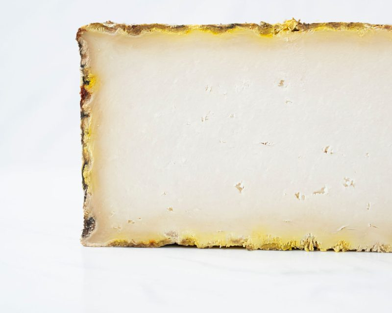
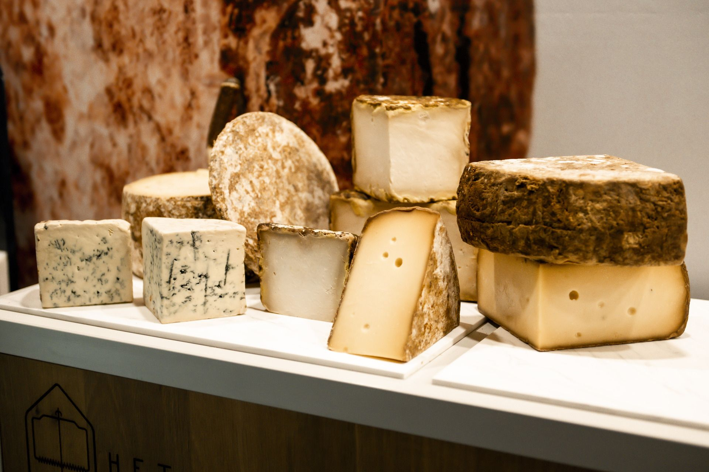
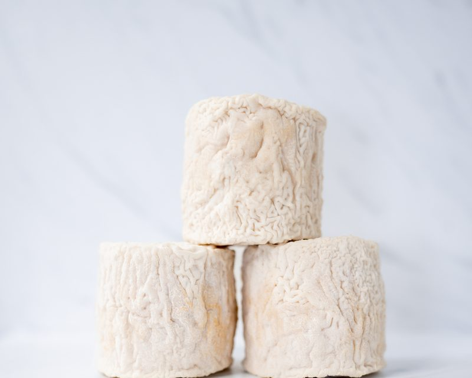
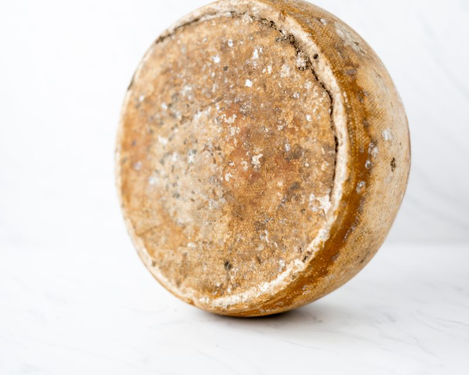
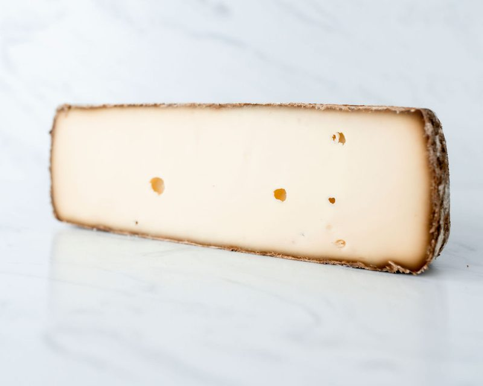
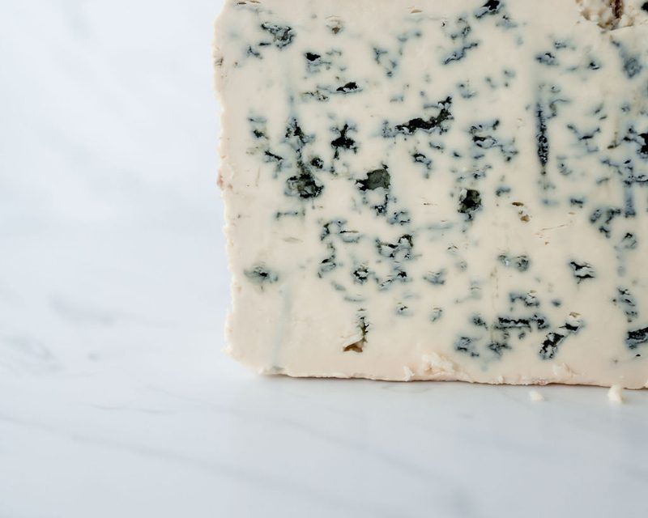
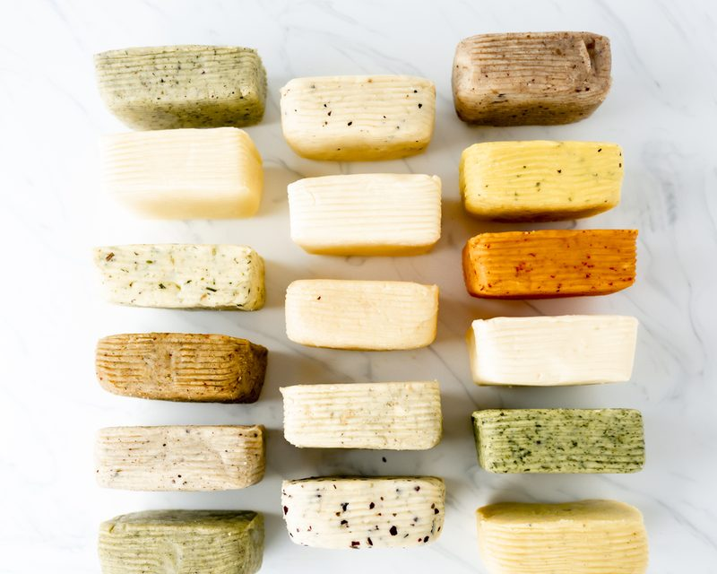
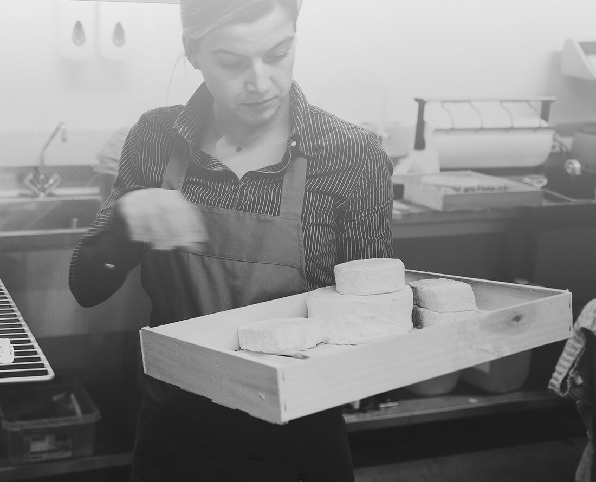
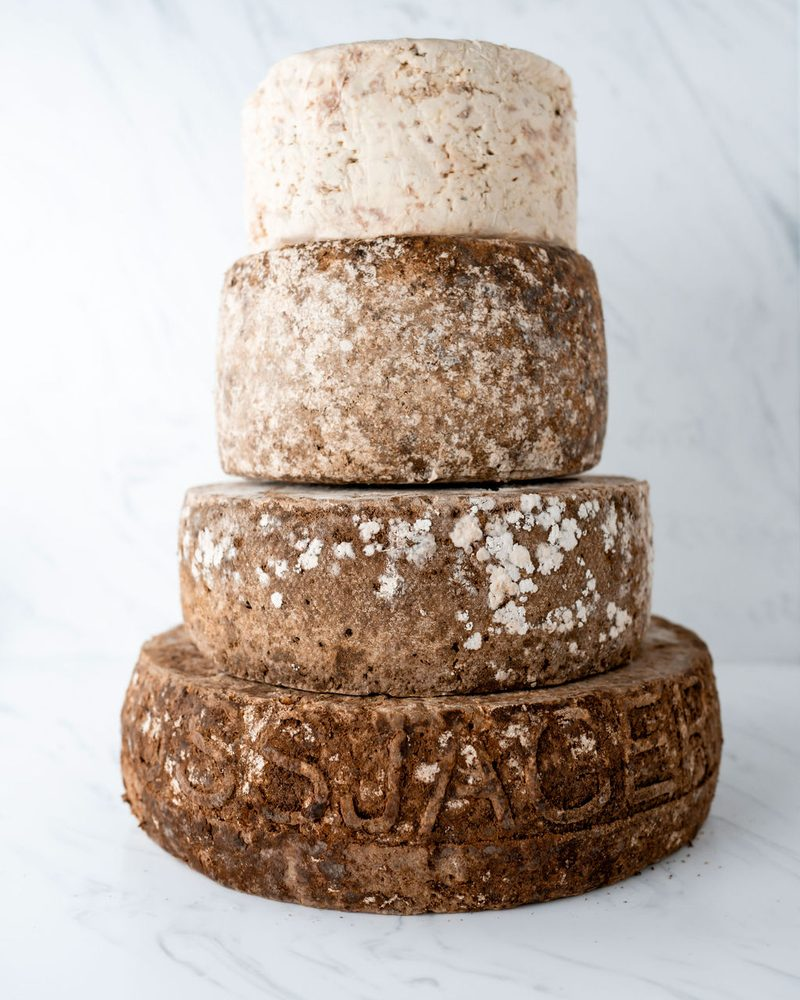
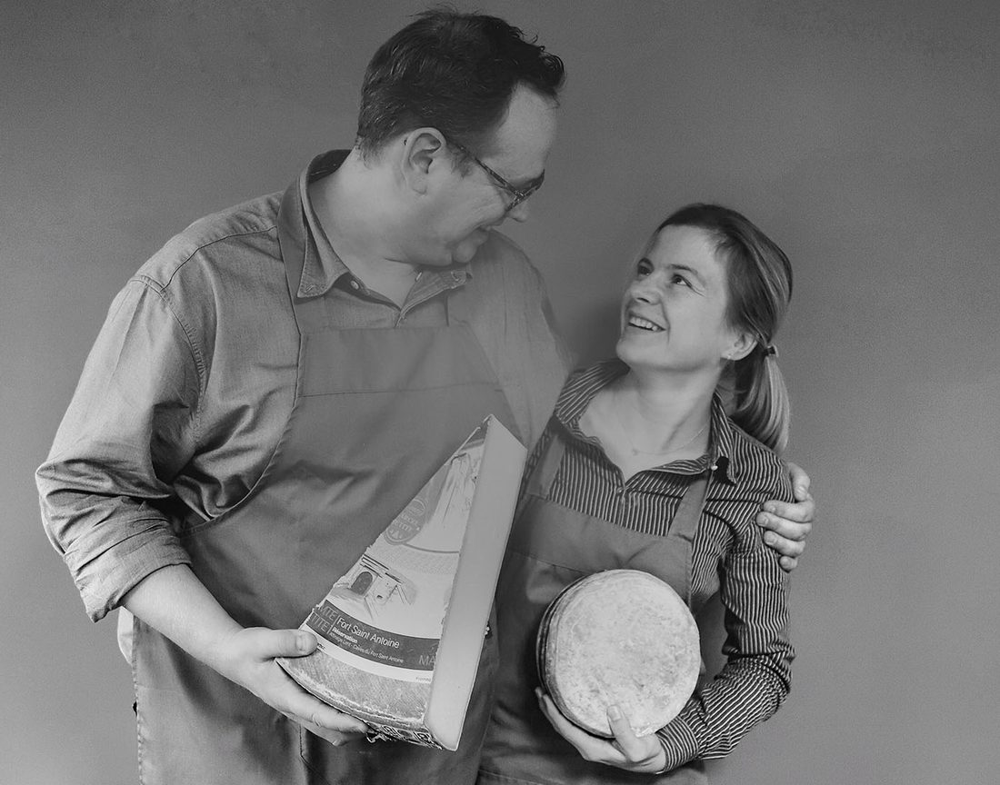

Geit & schaap
Gerijpt in een eigen, droge rijpingsruimte. Van fris zuur tot mooi droog en stallig.
Bekijk kazen

We kopen ambachtelijke kazen bij kleine boeren in heel Europa en laten ze in Oud Gastel rijpen tot ze precies goed zijn. Voor restaurants, chefs, sommeliers en kaasspeciaalzaken.
Een uitgebreid Nederlands assortiment, plus parels uit onder meer Frankrijk, Italië, Zwitserland en Spanje. Klik op een kaasfamilie voor een paar kazen die we nu rijpen.

Gerijpt in een eigen, droge rijpingsruimte. Van fris zuur tot mooi droog en stallig.

Gerijpt bij hoge temperatuur en luchtvochtigheid, voor een gebloemde witte korst. Nootachtig of juist stallig.

Een korst van lichtoranje tot donkerrood, door regelmatig wassen met pekel of drank. Dat bepaalt de smaak.

Van boerengouda tot kaas uit de Franse Alpen en de Pyreneeën. Deze laten we langer rijpen.

De afsluiter van de kaasplank en een smaakmaker in gerechten. Van zachtromig tot pikant.

Met de hand gevormde karneboter van de familie Dupont, naturel of op smaak gebracht.
Ons aanbod wisselt met de seizoenen en we voegen regelmatig nieuwe kazen toe. Zoekt u een kaas die hier niet staat? Vraag het gerust.

We gaan zelf langs bij kleine boeren in heel Europa die hun ambacht echt verstaan. Met hen werken we nauw samen.
Bij binnenkomst gaat elke kaas naar de rijpingsruimte die bij de soort past. Daar rijpt hij onder de juiste omstandigheden tot hij klaar is voor uw kaart. Dat heet affineren.
“Wij zijn geen kaasmakers, maar kaasrijpers.”

In Zuid-Tirol rijpt Hubert Stockner rauwmelkse kazen uit het Alpengebied in een natuurstenen bunker uit de oorlog. Het microklimaat daar geeft kazen met een eigen signatuur. Het Kaasatelier is de verdeler van deze kazen voor Nederland en België.
We komen met de kaasbus en een selectie kazen bij u langs. U bent ook welkom in ons proeflokaal in Oud Gastel.
We denken mee over de kaasplank, kaas-drankcombinaties en kaas in uw gerechten. En over snijden, verpakken en bewaren.
U bestelt via Cuisin op telefoon, tablet of pc. Uw vaste bestellijst staat klaar, u vult alleen de aantallen in.

Joost van Nijnatten en Lotte Franken leerden elkaar kennen bij restaurant Mijn Keuken, met één Michelinster. Na jaren in de betere horeca stapten ze in 2014 over naar het affineren van kaas, en in 2018 begonnen ze Het Kaasatelier.
Ze weten dus hoe het er in een keuken en aan tafel aan toe gaat. Dat merkt u aan het advies: welke kaas past bij uw kaart, welke drank erbij en hoe u hem het beste serveert.
Benieuwd naar onze kazen? Maak een afspraak, dan komen we langs met een selectie om te proeven.
Bel, app of mail ons. We komen met de kaasbus bij u langs, of u komt naar ons proeflokaal in Oud Gastel. Al klant? Bestel dan direct via Cuisin.
Kaas voor thuis? Daarvoor is er De Kaasboetiek.